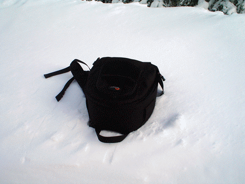

The way
of an artist goes always in twists and turns… it looks like nothing in
the field of art is happening straight and easy. Every time I am asked
to describe my work I simply answer - I write and shoot. I graduated in
two different fields - Medical Physics at the
Sofia University
and Cinema
and TV Directing at
The
National Academy of Theatre and Film Art.
My PhD was on
VideoDance at the
Institute of Art Studies,
where I continued my researches
on
Stage and Screen and Photography.
During the years I succeeded to
make many personal projects - at the end of 2003
I published my first short stories in a book called "Vacuum".
In 2004 I realized my first
short film "A
Look In The Eyes".
At the end of 2005 I presented my first exhibition "Forms
and Words". It was an
experimental project, combining
two arts -
Haiku and
Photography. Shortly afterwards I finished my first documentary
short "We".
As a student I wrote and directed
the film "Praga 18", following in the years "Elusive",
"A...",
"Water",
"Jam
Session", "Run
Out Of You", "Fight".
My photography works were presented in the exhibitions "Still Life",
"One",
"DanCine project",
"Contemporary dance",
"Writings".
Along with my personal projects I've been working as a
director, photographer, cameraman and stage light designer
for different companies and projects.
ioshertz@abv.bg | +359 884 319 568
ioshertz@abv.bg | +359 884 319 568
